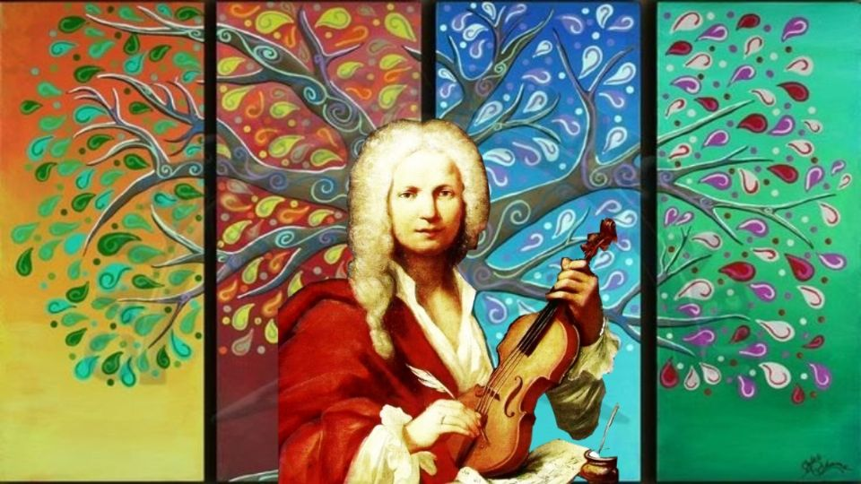
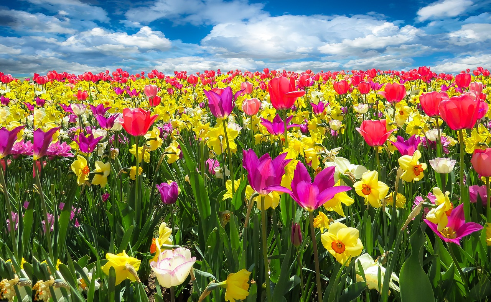
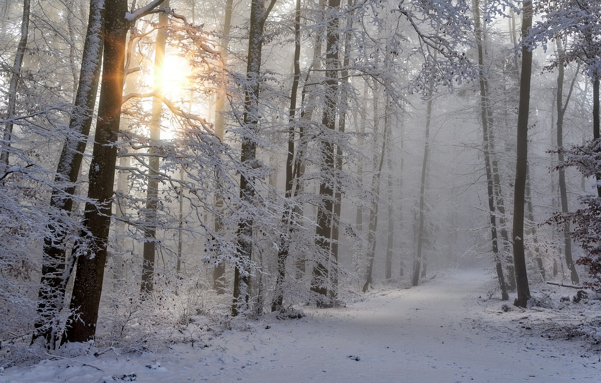

Bienvenidos a un mundo de armonía y emoción en constante cambio. Antonio Vivaldi, uno de los compositores más célebres del período barroco, nos regaló una obra maestra que ha perdurado a lo largo de los siglos: "Las Cuatro Estaciones" (Il Cimento dell'Armonia e dell'Inventione). Este ciclo de conciertos para violín y orquesta nos transporta a las distintas estaciones del año a través de la música, permitiéndonos experimentar los matices y sensaciones únicas que cada estación nos brinda.


La Primavera, la estación del renacimiento, es representada por Vivaldi con melodías frescas y exuberantes. Los violines danzan como pájaros en el cielo, mientras los arpegios nos transportan a campos llenos de flores que despiertan. Este concierto nos hace sentir la emoción de la vida que renace y florece en esta estación del año.

El Verano, con su ardiente calor, se presenta en la música de Vivaldi con pasajes rápidos y apasionados. Los truenos y relámpagos resuenan en los violines, mientras el sol abrasador se hace sentir. Este concierto nos hace experimentar la intensidad del verano y nos transporta a tardes bochornas y tormentas que alivian la sofocación.

El Otoño llega con una serenidad melancólica en la música de Vivaldi. El sonido de la caza y la cosecha se entrelazan en los violines, creando una atmósfera de transición. Este concierto nos invita a reflexionar sobre la fugacidad de la vida y la belleza efímera de la naturaleza.

El Otoño llega con una serenidad melancólica en la música de Vivaldi. El sonido de la caza y la cosecha se entrelazan en los violines, creando una atmósfera de transición. Este concierto nos invita a reflexionar sobre la fugacidad de la vida y la belleza efímera de la naturaleza.